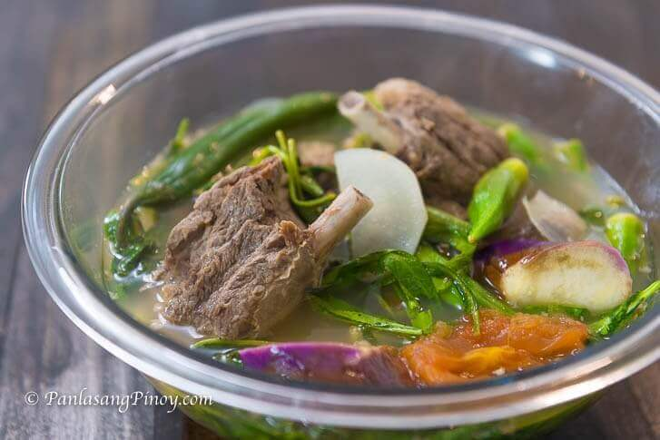

Sinigang na Baka

Ingredients
- 3 lbs. beef ribs
- 1 40g pack Knorr Sinigang sa Sampaloc Mix Original
- 1 bunch kangkong
- 1 medium eggplant sliced
- 2 ripe tomato quartered
- 3 long green pepper
- 8 to 10 pieces okra
- 1 small daikon radish labanos, sliced
- 10 pieces snake beans sitaw, cut into 2 inch pieces
- 1 medium onion quartered
- 8 to 10 cups water
- 2 1/2 tablespoons patis
- 1/4 teaspoon ground black pepper
Directions
-
Combine water and beef ribs in a pressure cooker. Pressure cook for 25
to 30 minutes. Note: you can transfer this later to a larger cooking pot
once the beef gets tender, if needed.
- Add onion and tomato. Cook for 3 minutes.
- Add Knorr Sinigang sa Sampaloc Mix. Stir.
-
Put the daikon radish (labanos) into the pot, Cover and cook for 5
minutes
-
Add long green pepper, okra, snake beans, eggplant, and the kangkong
stalks. Cover and cook for 5 minutes.
- Season with patis and ground black pepper.
-
Add kangkong leaves. Cover the pot and turn the stovetop off. Let t stay
for 5 minutes.
- Transfer to a serving bowl. Serve.
- Share and enjoy!
Return to Main Page